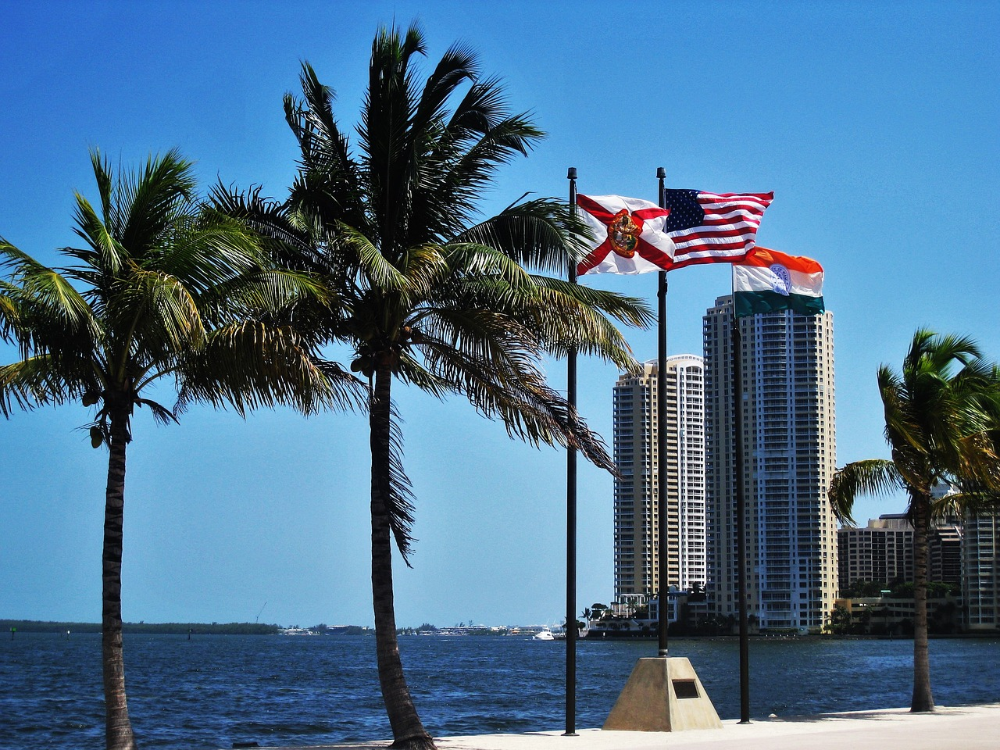

Florida - Key West & Fort Lauderdale
Florida is the southeasternmost U.S. state, with the Atlantic
on one side and the Gulf of Mexico on the other. It has hundreds
of miles of beaches. The city of Miami is known for its Latin-American
cultural influences and notable arts scene, as well as its nightlife,
especially in upscale South Beach.
Orlando is famed for theme parks, including Walt Disney World.
The Florida Keys are a string of tropical islands stretching about
120 miles off the southern tip of the U.S. state of Florida,
between the Atlantic Ocean and Gulf of Mexico.
They’re known as a destination for fishing, boating, snorkeling and
scuba diving.

South Carolina - Charleston
Charleston, the South Carolina port city founded in 1670,
is defined by its cobblestone streets, horse-drawn carriages
and pastel antebellum houses, particularly in the elegant
French Quarter and Battery districts.
The Battery promenade
and Waterfront Park both overlook Charleston Harbor,
while Fort Sumter, a federal stronghold where the first shots
of the Civil War rang out, lies across the water.
Bahamas - Nassau
Nassau is the capital of the Bahamas. It lies on the island of
New Providence, with neighboring Paradise Island accessible via
Nassau Harbor bridges. A popular cruise-ship stop, the city has
a hilly landscape and is known for beaches as well as its offshore
coral reefs, popular for diving and snorkeling.
It retains many of its typical pastel-colored British colonial buildings, like the
pink-hued Government House.